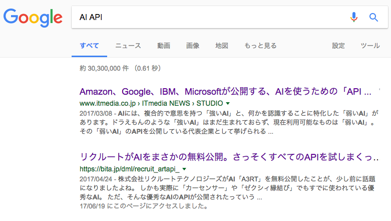
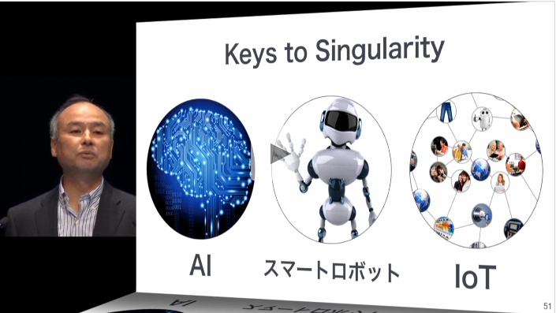
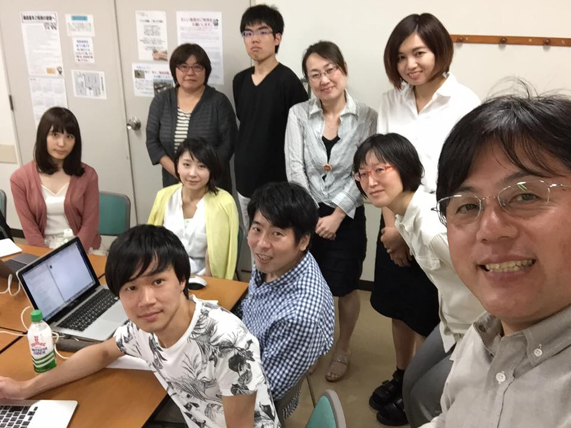

「AIちゃんで会話アプリを作ったよ」
サイバー大学専任講師 なかしまぁ先生
1. 自己紹介
- 講師：中島俊治(なかしまぁ先生)
- 職歴：


- 資格：HTML5プロフェッショナル認定資格レベル２
- 受賞：マイクロソフトＭＶＰアワード(2014〜)
- 現在の仕事：サイバー大学、放送大学、八洲学園大学、他２校。デジハリオンライン。東京アプリ・ワークショップ
2. 背景
- ①LINEのニュースを見ていたら⇒Youtube(6/16)
- ②某大学でアンケートしたところ、学生の一番の興味は「IoT」「AI」「ビッグデータ」
- ③山崎先生のメッセージ(6/23)

3. 作ってみる
必要なもの
- １.音声認識
- ２.音声合成
WebSpeech API
HTML5の「WebSpeech API」を使う。２つの部分から構成される。
１．Asynchronous Speech Recognition(音声認識)
２．Text-to-Speech(音声合成)
3-1. ソースコード抜粋
function $id(id){return document.getElementById(id);}
１．音声認識
function nyuryoku(){
//①オブジェクト生成
var recognition = new webkitSpeechRecognition();
//②言語指定
recognition.lang = $id("lang").value;
//③認識開始
recognition.start();
//④終了時
recognition.addEventListener('result', function(e){
//④文字列取得
var rec = e.results.item(0).item(0).transcript;
});
}
２．合成合成
function mySpeech(){
//①テキスト取得
var input = $id("input").value;
//②音声番号指定
var voice = parseInt($id("voice").value);
//③オブジェクト生成
var input = new SpeechSynthesisUtterance(input);
//④言語指定
input.lang = $id("lang").value
//⑤音声リスト
var voices = speechSynthesis.getVoices();
//⑥音声指定
input.voice = voices[voice];
//⑦音声開始
speechSynthesis.speak(input);
}
3-2.注意点
- まだ開発途中の仕様。
- 音声の種類がPCによって異なる。
- バグがあり一部冗長なコードを書かなければならない。
3-3. 完成
「テキスト読上と音声認識」
http://springreen.jp/SHOWCASE/SPEECH/index.html3-4. 回答を工夫
プログラムを追加して回答を工夫する。
rec=rec.replace("中島","イケメン中島");
rec=rec.replace("なかしま","イケメン中島");
var now=new Date();
rec=rec.replace(
"何時",
now.getHours()+"時"+now.getMinutes()+"分です"
);
でも、これはAIではない
4.AIを実装する
AI APIを探す
「AI API」でぐぐってみた

5. 検索１位
-
1. Amazon、Google、IBM、Microsoftが公開する、AIを使うための「API」「ライブラリ」「実行環境」一覧
HP -
2. リクルートがAIをまさかの無料公開。さっそくすべてのAPIを試しまくってみた
https://bita.jp/dml/recruit_artapi_- Text Suggest API（入力補助）
- Text Classification API（文書分類）
- Proofreading API（文法間違い探し）
- Talk API（自動応答）
- Image Infuluence API(画像の影響度)
- Listing API（レコメンドリスト）
6. Talk API
https://a3rt.recruit-tech.co.jp/product/talkAPI/Talk APIはChatbotを作成するためのAPIです。 Recurrent Neural Network(LSTM)を用いた入力文からの応答文生成による日常会話応答機能を提供します。 Talk APIを活用したChatbotによって様々なアプリケーション上でユーザとの対話を自動化し、 どのようなタイミングにおいても即座にユーザからの問いかけに対して応答することができます。
[Small Talk API]
完全自動の日常会話を可能にするAPIです。 例えばあなたの運用しているWebサイトでAPIを呼び出しサイト上でユーザとの会話を可能にします。 さらにユーザとの会話を学習していくことでより賢く・より自然な会話を実現します。
注意！
他人の名称・メールアドレス・住所・電話番号など個人を特定しうる情報はアップロードしないでください。
6-1. ソースコード参考
function talk1(){
$.post( //jQueryで送信
'https://api.a3rt.recruit-tech.co.jp/talk/v1/smalltalk',
params,
(result)=>{ //結果はresultに格納される
if(result.status == 0) {
pcres = result.results[0].reply; //応答内容
speech1(pcres);
}
},'json');
return false;
};
7. AIちゃん
- URL:
http://springreen.jp/SHOWCASE/Talk/
QRコード：

8. 最後に

まとめ
HTML5はなんでもできて楽しいなぁ〜
ちょっとだけPR
東京アプリ・ワークショップでは初心者向けHTML5講座を開催しています。
